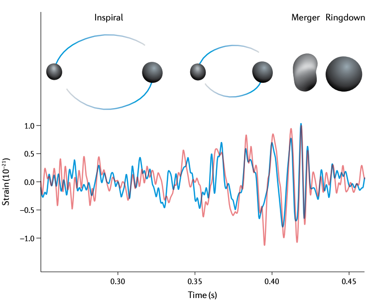
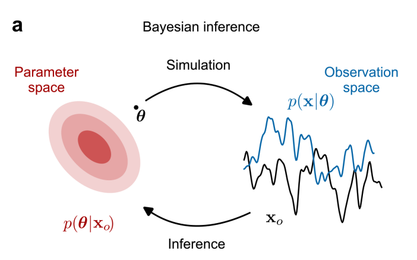
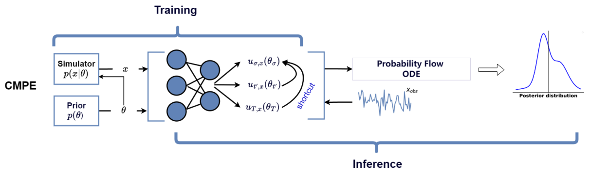

Simulation-Based Inference in GW Astronomy
AI Café - Leuven.AI meets LGI
Isaac C. F. Wong
2026-02-23


Gravitational Waves: From First Detection to Hundreds — But Inference is the Bottleneck
-
GW astronomy is booming:
- GW150914 (2025): First detection
- Now (2026): ~350+ confident detections after O4 run

Bailes et al. (2021)
Gravitational Waves: From First Detection to Hundreds — But Inference is the Bottleneck
-
GW astronomy is booming:
- GW150914 (2025): First detection
- Now (2026): ~350+ confident detections after O4 run

LIGO-G2302098
Gravitational Waves: From First Detection to Hundreds — But Inference is the Bottleneck
- Detections are routine → next-gen detectors promise a yearly rate of $10^{5}$ - $10^{6}$ binary neutron star and binary black hole coalescences
Gravitational Waves: From First Detection to Hundreds — But Inference is the Bottleneck
-
But classical Bayesian PE (MCMC, nested
sampling) struggles:
- Hours to days per event
- Brutal for overlapping signals, exotic waveforms, populations, real-time alerts
Bayes theorem: $$ p(\theta | d) = \frac{p(d |
\theta) p(\theta)}{\int p(d | \theta)p(\theta)
\mathrm{d}\theta} $$
Gravitational Waves: From First Detection to Hundreds — But Inference is the Bottleneck
-
Simulation-Based Inference (SBI):
- Amortized neural inference → full posteriors in seconds (after training), enabling new science!
Gravitational Waves: From First Detection to Hundreds — But Inference is the Bottleneck

Gravitational Waves: From First Detection to Hundreds — But Inference is the Bottleneck

SBI in GW Astronomy: Recent Advances
SBI in GW Astronomy: Recent Advances
-
Core idea recap:
- Simulator generates $10^{5}$ – $10^{6}$ ($\theta$, noisy strain) pairs
- Train neural net to learn $p(\theta | \mathrm{strain})$ directly
- Amortized: Train once (costly) → fast inference per event (ms–s)
- No explicit likelihood needed → scales to expensive/exotic waveforms
Popular Methods
Neural Posterior Estimation

Popular Methods
Neural Ratio Estimation

$$ r(\theta | x) = \frac{p(\theta | x)}{p(\theta)}
$$
Popular Methods
Neural Likelihood Estimation

Popular Methods
Flow Matching Posterior Estimation

$$ \frac{\mathrm{d}}{\mathrm{d}t}
\psi_{t,x}(\theta)=v_{t,x}(\psi_{t,x}(\theta))$$
Popular Methods
Consistency Model Posterior Estimation

$$f_{\phi}(\theta_{t}, t, x) \rightarrow
\theta_{\sigma}$$
Key Wins in GW
- Fast PE for exotic sources (IMBH, eccentric/precessing, high-mass)
- Handling overlapping signals & real glitches/noise
- Population inference over catalogs (cosmology, GR tests)
- Real-data tests: accurate posteriors, huge speed-ups
Tools & Ecosystem
More Challenges
Why Core-Collapse Supernovae? The Ultimate Challenge for SBI in GW Astronomy
- Weak & bursty: ~10–100× fainter than BBH mergers, short ~0.1–1 s bursts
- Diverse morphologies: driven by rotation (high-f peaks), SASI (low-f ~100 Hz), prompt convection, PNS oscillations/g-modes ramp-up
- Multimessenger goldmine: GW + neutrinos + EM → probe explosion engine, EOS at supranuclear density
- Next galactic event: ~1–2 per century (Milky Way rate ~1.6/century) — overdue & game-changing for real-time science
Why Core-Collapse Supernovae? The Ultimate Challenge for SBI in GW Astronomy
- Extremely expensive simulators: 3D MHD + neutrino transport + GR (weeks per sim)
- No analytic templates → traditional PE impossible for realistic diversity/stochasticity
- High multimodality & degeneracies → perfect testbed for neural density estimators (NPE, FMPE, diffusion models)
- Amortized wins: train on catalogs → fast posteriors for rotation rate, asymmetry strength, EOS hints